1. Configuración inicial de INBOX
6 issues HighEn la página de settings inicial los botones de acción (CTAs) quedan parcialmente o totalmente ocultos. El header también se solapa con el banner del trial, dificultando la navegación.
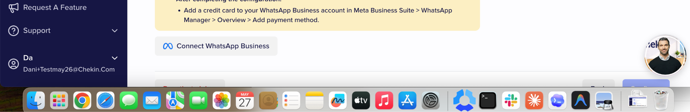
Al activar la opción de chat en la guestapp, el sistema muestra de forma constante el mensaje de que el huésped principal debe registrarse para poder usar el chat. Esto ocurre en dos escenarios:
- Antes de registrar al leader: no debería bloquearse, ya que el huésped podría tener dudas sobre el propio formulario de registro.
- Después de registrar al leader: el mensaje persiste, aunque el huésped ya esté registrado correctamente.
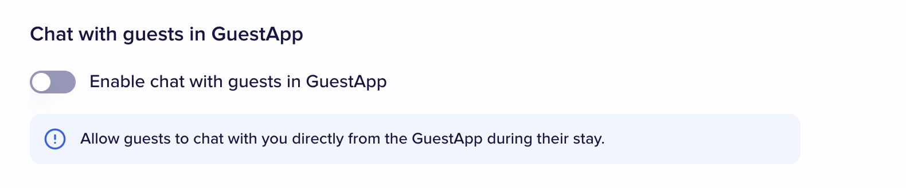

Si un usuario tiene custom emails ya configurados, INBOX no los lista como opciones a elegir para el envío.

Aparece un texto "custom email" cuyo significado no queda claro en el contexto donde se muestra.
Además, el campo de property name puede inducir a error: dado que se trata de un alias aplicado a todas las propiedades, no tiene sentido mostrarlo asociado a una propiedad concreta.
La configuración de comunicaciones de INBOX no está conectada con la configuración de comunicaciones a nivel propiedad. Es posible activar SMS o WhatsApp en INBOX sin que esté activado en la propiedad.
Propuesta: eliminar los settings de comunicaciones a nivel propiedad si ya no cumplen ninguna función, para evitar la duplicidad y la confusión.

La sección correspondiente se muestra en la guestapp aunque no se haya habilitado en la configuración de INBOX.

2. Facturación, costes y feature usage (PAYG)
6 issues CriticalLa interfaz no indica el coste por SMS, ni unitario ni acumulado, antes ni después del envío.


No hay un flujo definido para que el coste de mantenimiento se contabilice dentro de feature usage de cara a su facturación.
No se muestra el coste de las ventanas de WhatsApp ni el coste por mensaje.
Adicionalmente, la interfaz indica que el coste de los WhatsApps lo paga el propietario directamente a Meta, pero el flujo completo no queda claro para el usuario (qué se paga, a quién y cuándo).
Al activar una funcionalidad PAYG (WhatsApp o SMS), el sistema no obliga a realizar un top up previo. La funcionalidad puede activarse y usarse sin saldo, lo que puede dejar mensajes sin enviar o sin cobrar.
El uso de las funcionalidades de INBOX no se está registrando en feature usage, por lo que no es posible cobrar al cliente en base a su consumo.
Es posible realizar llamadas telefónicas desde el dashboard. Esta acción tiene un coste elevado pero:
- El coste no se muestra al usuario antes de la llamada.
- No está añadida a feature usage para su cobro.

3. Creación de chat rooms y búsqueda de reservas
6 issues HighEl término "guest" usado en la creación del chat es ambiguo. Es más preciso llamarlo "reserva", ya que la unidad sobre la que se opera es la reserva.
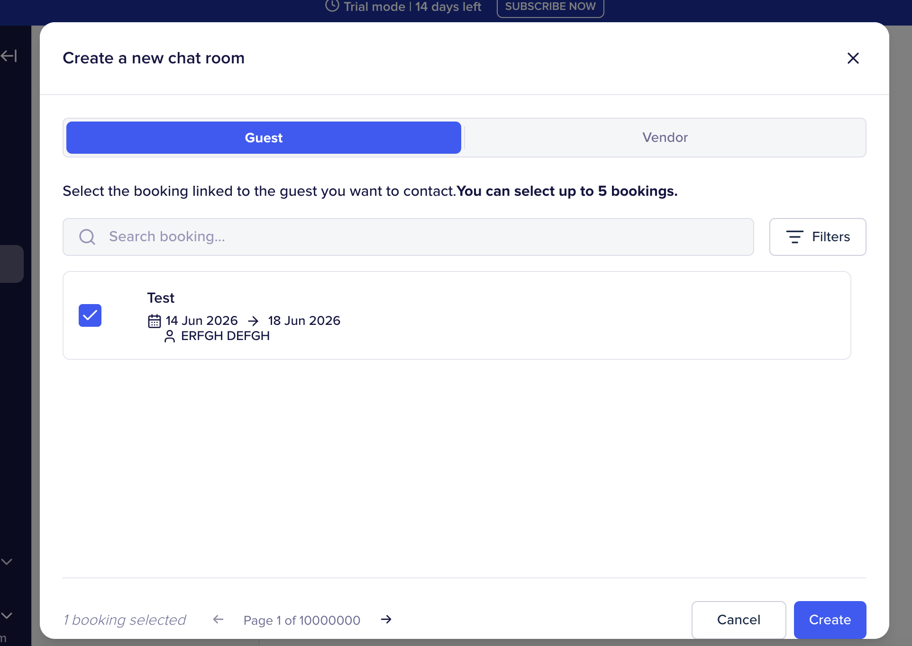
Los campos mostrados en las cards/boxes no son los más adecuados para localizar visualmente una reserva concreta. Faltan datos clave para diferenciarlas entre sí.
Actualmente la búsqueda solo funciona por nombre del leader. Debería permitir buscar al menos por:
- ID de reserva
- External ID
- Fecha de la reserva
- Nombre de la propiedad
El paginador indica que existen 10.000.000 de páginas, cuando en realidad solo debería mostrar una única página al no haber más reservas disponibles.
El diseño actual no contempla escenarios reales en los que una cuenta tenga decenas o cientos de reservas (ej. 100+). La experiencia se vuelve inviable al cargar todas las reservas en esta vista.
Los botones de acción inferiores aparecen cortados visualmente, impidiendo su uso correcto.
4. Chats con vendors
3 issues MediumAl crear un chat con un vendor, no se aprovecha la información de los vendors ya creados en el sistema. El usuario debe introducir los datos de nuevo.

Al crear un chat con un vendor, el sistema no redirige automáticamente al chat recién creado.
El chat creado tarda un tiempo considerable en aparecer dentro del cajón de vendors del menú lateral, generando incertidumbre sobre si la creación se ha completado.
5. Gestión y trazabilidad de mensajes
8 issues CriticalLos mensajes creados desde tu propia cuenta no quedan asignados a ti como autor, y además no son visibles desde tu perfil.

Parece que los mensajes solo pueden tener un único status a la vez (priority, all messages, etc.) en lugar de admitir varios.
Como consecuencia, al marcar un mensaje como "priority" deja de aparecer en "all messages", lo cual no es el comportamiento esperado.
Si un huésped responde a un correo enviado desde INBOX, dicha respuesta no aparece dentro de INBOX, rompiendo el hilo de conversación.
Las respuestas que un huésped envía por SMS no aparecen en INBOX, generando el mismo problema de trazabilidad que con email.
Desde los settings de INBOX, el usuario puede modificar el correo, número de teléfono o WhatsApp en cualquier momento. El sistema no notifica los problemas que esto puede provocar (por ejemplo, pérdida de historial de conversación) ni aplica lógica que controle estas consecuencias.
Al redactar un mensaje, los botones de envío y el botón de configuración aparecen parcialmente ocultos, dificultando su uso.

Se permite enviar correos y SMS incluso cuando la reserva no tiene un correo o un teléfono añadido. El sistema debería bloquear el envío o avisar al usuario.
No hay opción de enviar un mensaje únicamente a través de un canal específico:
- Solo a la guestapp.
- Solo al PMS.
- Solo a la OTA (Booking, Airbnb, etc.).
Además, el código de acceso puede acabar enviándose a un correo del PMS al que el usuario no tiene acceso, o directamente a una reserva que no tiene correo añadido, sin que el sistema avise ni bloquee el envío.
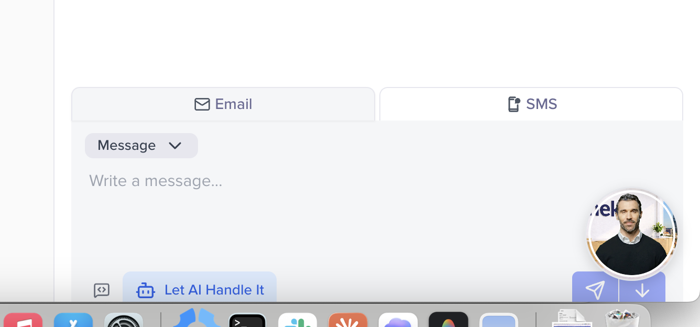
6. Mensajes calendarizados
4 issues MediumActualmente los mensajes calendarizados viven en una sección aparte. Deberían aparecer dentro de la sección general de mensajes, junto al resto del historial.
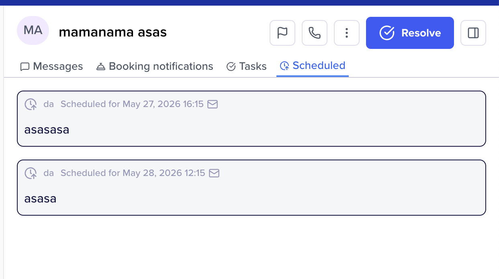
El formulario muestra un campo con tu propio nombre, lo cual es redundante. Un mensaje calendarizado siempre lo crea el usuario actual.
Tras hacer reload, los mensajes calendarizados creados ya no se muestran en la interfaz, lo que sugiere que no se persisten correctamente o que la vista no los recupera.
No existe forma de cancelar o eliminar un mensaje calendarizado antes de que se envíe.
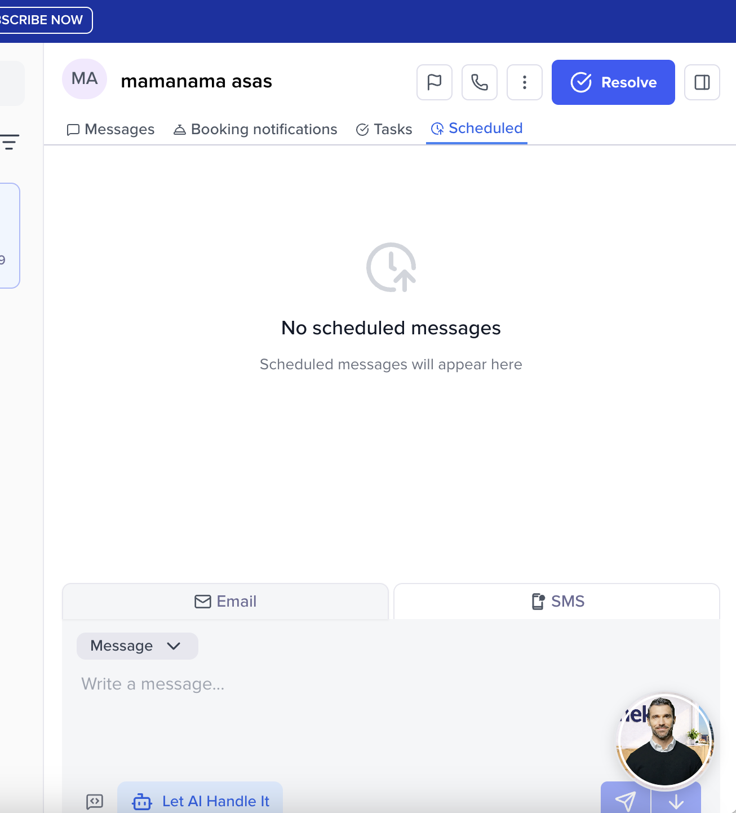
7. Integración con reservas y contactos
5 issues HighDesde la pantalla de información de una reserva no existe ningún enlace o acceso directo a INBOX. Tampoco se muestra información de comunicaciones asociada.

En el listado/landing de reservas no se incluye ningún status que indique el estado de comunicaciones de cada reserva.
Los datos de comunicaciones mostrados a nivel reserva no reflejan lo que está ocurriendo realmente en INBOX, generando inconsistencia entre vistas.
Desde la sección de contact details no se puede añadir ni modificar la información del contacto.
Además, el título de la sección dice "guest details" cuando debería ser "reservation details", ya que la información hace referencia a la reserva, no al huésped.

Las reservas creadas desde el PMS llegan con un correo fake y sin SMS. Cuando el huésped añade posteriormente su correo o teléfono real a nivel huésped, INBOX sigue usando los datos sincronizados a nivel reserva en lugar de los nuevos.
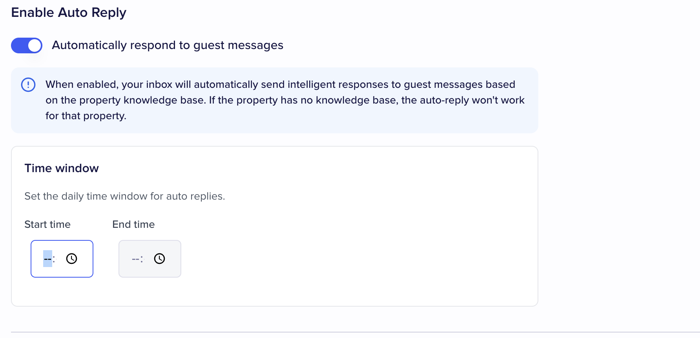
8. Guest App, IA y verificación de identidad
6 issues CriticalPara poder usar el chat se obliga al huésped a verificar su identidad. Esto añade fricción innecesaria en una funcionalidad de soporte conversacional básica.
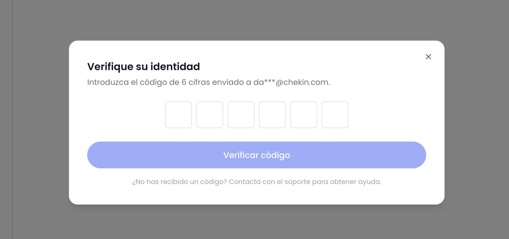
Incluso completando la verificación de identidad, el sistema responde con error, impidiendo continuar.

Al intentar redactar un mensaje desde la guestapp, el sistema muestra un error y no permite continuar.
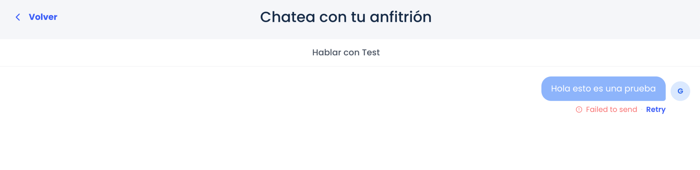
Al utilizar la funcionalidad de IA, esta devuelve un "no response" sin generar contenido útil.

La landing indica que el sistema detecta automáticamente el idioma de la reserva y responde en él. Sin embargo, al probar con una reserva en español, las respuestas predeterminadas se envían en inglés (o en el idioma configurado en el dashboard).
El propio settings del auto-reply indica textualmente: "When enabled, your inbox will automatically send intelligent responses to guest messages based on the property knowledge base. If the property has no knowledge base, the auto-reply won't work for that property."
Sin embargo, no existe ninguna sección — ni dentro de la propiedad, ni en INBOX, ni en ningún otro punto del dashboard — donde se pueda subir o gestionar esa documentación que el sistema dice utilizar para generar las respuestas inteligentes. La feature queda efectivamente inutilizable porque ninguna propiedad puede llegar a tener "knowledge base".
9. Templates por grupo de propiedad
1 issue HighINBOX debería permitir definir templates por grupo de propiedad, en línea con lo que ya existe en prácticamente todas las funcionalidades del producto.
Una misma cuenta puede tener varias propiedades sincronizadas con identidades visuales y operativas distintas, por lo que forzar una única imagen corporativa global para todas las comunicaciones no es realista.
10. Otras observaciones de UX
4 issues MediumEl selector de time window dentro del auto reply no responde al clickar en el campo. Solo se abre al hacer clic específicamente sobre el icono del reloj.
Las secciones de booking notifications y task no permiten al usuario añadir notificaciones ni tareas, y no están siendo operativas. Tampoco se indica qué notificaciones aparecerán o de dónde provienen, dejando estas secciones sin contexto.
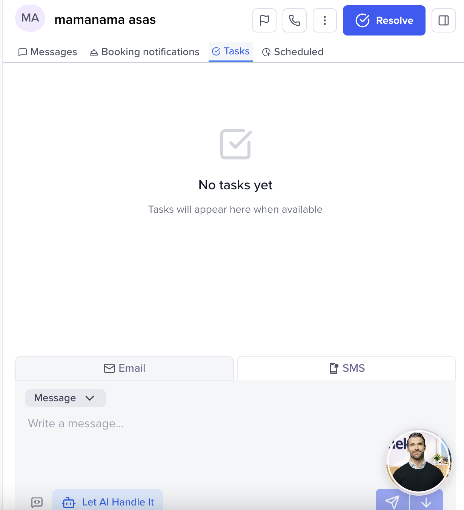
Las notas se gestionan desde dentro de las secciones de email y SMS, lo cual no parece la ubicación más lógica para una funcionalidad transversal a la conversación.

Los status disponibles para filtrar por momento de la reserva no son los más adecuados. Deberían reflejar el ciclo de vida real:
- Prechekin
- Chekin day
- Durante la estancia
- Post estancia
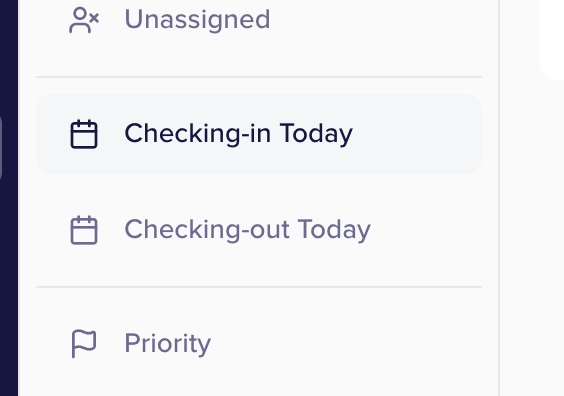
El flujo de WhatsApp queda pendiente de testeo, ya que requería la creación previa de una cuenta en Meta.
No se ha probado el flujo de mensajes entrantes/salientes a través del PMS ni de la OTA (Booking, Airbnb, etc.). Las observaciones de este reporte se limitan a los canales testeados.
11. Sección de Tasks
5 issues HighLa entrada de Tasks no es visible o queda oculta dentro del menú de navegación lateral, lo que dificulta encontrarla y acceder a la funcionalidad.

Al crear una tarea solo se ofrece un selector "Chat room (optional)", lo que impide vincular la tarea directamente a una reserva con su contexto operativo real.
Adicionalmente, la unidad sobre la que se trabaja en el resto del producto es la reserva, no la "chat room". El campo debería renombrarse a "reserva" para mantener coherencia terminológica.
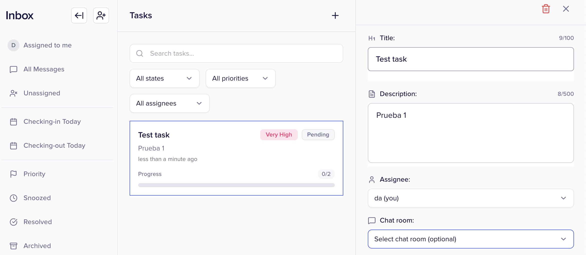
Cuando se asigna una tarea a una reserva, dicha tarea no se visualiza en la caja de mensajes correspondiente a esa reserva dentro de la sección de Tasks, rompiendo la trazabilidad entre tarea y reserva.
El listado de tareas se ordena únicamente por momento de creación. No existe la posibilidad de ordenarlas por otros criterios como prioridad, fecha de vencimiento, asignado, estado, etc., lo que limita su utilidad cuando hay un volumen alto de tareas.
Cuando el progreso de una tarea alcanza el 100% (todos sus subitems marcados), la tarea no cambia automáticamente su estado a "Completed". El usuario debe actualizar el estado manualmente, lo que rompe la lógica esperada y deja tareas terminadas sin reflejar como tal.